Monsieur Le Blanc
Sophie Germain
«Mi admiración y asombro…»
«…cuando mi estimado corresponsal, el Sr. Le Blanc…»
«…se metamorfosea en este personaje ilustre…»
1790. París.
Sophie tiene catorce años.
Antes de ser matemática, fue una niña a la que le prohibieron estudiar.
Sus padres creían que las matemáticas no eran para una mujer.
Le quitaban la luz.
Le quitaban el abrigo.
Ella seguía estudiando.
Cuadernos que nadie pensaba que existían.
Levantó la cabeza. Se había quedado dormida sobre la mesa.
La tinta de la pluma seguía congelada en el papel.
Mente solitaria trabajando en silencio, desafiando los límites de lo que la sociedad creía posible.
Mueve la vela para ver el escritorio
Continúa el relatoI · Una niña en París
París · 1790
Una ciudad llena de contrastes: luces de salón, revolución en las calles, y para una joven, casi ningún camino hacia las aulas.
No parecía destinada a cambiar la historia de las matemáticas. Finales del siglo XVIII y comienzos del XIX: universidades y colegios, casi por completo, cerrados a las mujeres.
Pero tenía una obsesión profunda por comprender el lenguaje secreto de los números.
II · Estudiar en secreto
Pasaba horas enteras resolviendo problemas que grandes pensadores de su tiempo evitaban.
Sus ideas circularían entre matemáticos de Europa. Era una pensadora capaz de penetrar en los misterios más profundos de las matemáticas.
Detrás de todo había una realidad dura: no podía asistir a conferencias científicas. Durante años tuvo que estudiar en secreto.
Sus padres intentaron impedirlo. En pleno invierno retiraban la luz de su cuarto.
Encontró velas. Siguieron quitándole el abrigo. Continuó estudiando. Finalmente dejaron de intentar detenerla.
Escribía ecuaciones en cuadernos que nadie pensaba que existían.
Autodidacta en una época que prohibía aprender. Mucho talento, reflejado en sus manuscritos — aunque solo bajo un seudónimo la tomaban en serio.
Al principio buscaba desesperadamente algo que leer.
Pero tenía intuición, imaginación y método.
Pasa el cursor sobre las fórmulas
École Polytechnique
III · La puerta cerrada
La gran escuela de matemáticas abrió sus puertas.
Pero no para ella.
Las mujeres no podían entrar.
IV · Otro nombre
Si no podía entrar con su nombre, entraría con otro.
Consiguió apuntes, ejercicios y el pulso de los cursos bajo el nombre de un alumno que se había marchado.
Bajo el nombre de Monsieur Le Blanc, Sophie enviaba soluciones a los ejercicios de los maestros.
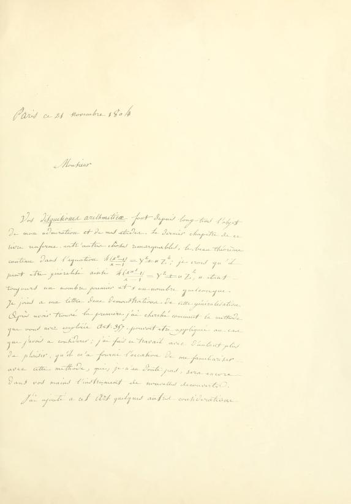
V · El maestro
Algo llamó la atención de Joseph-Louis Lagrange. Ese alumno se volvía excepcional.
Quiso conocerlo. Descubrió que no era un alumno.
Años después, Sophie ya no necesitaba imaginar qué dirían los grandes matemáticos.
Les escribía.
Lagrange no la rechazó.
Se convirtió en su mentor.
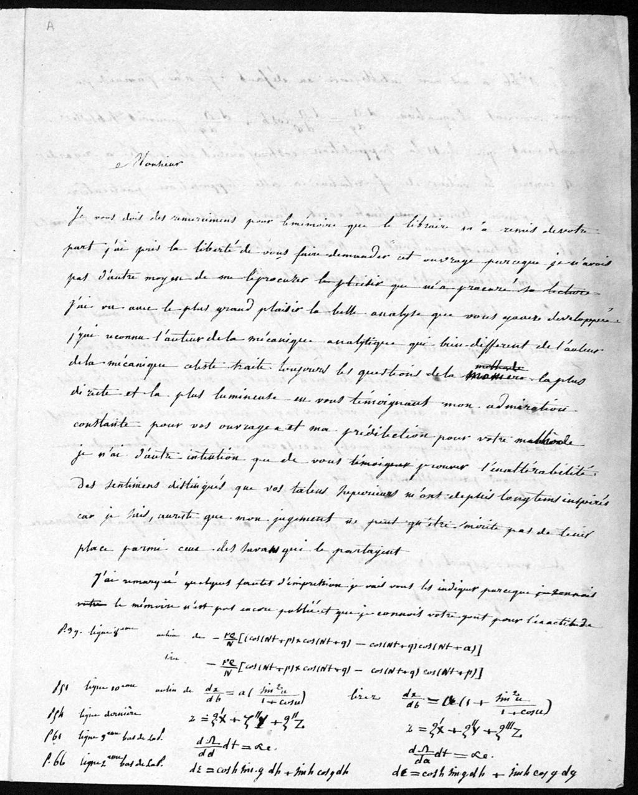
matière
méthode
Notas al margen. Ecuaciones corregidas.
No nació sabiendo demostrar.
Aprendió a hacerlo.
Su letra real — tachaduras, sustituciones, rigor que se construye hoja a hoja. Archivo de Florencia: más de doscientas páginas conservadas.
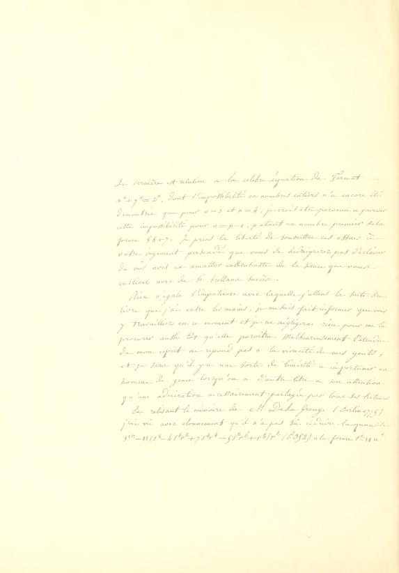
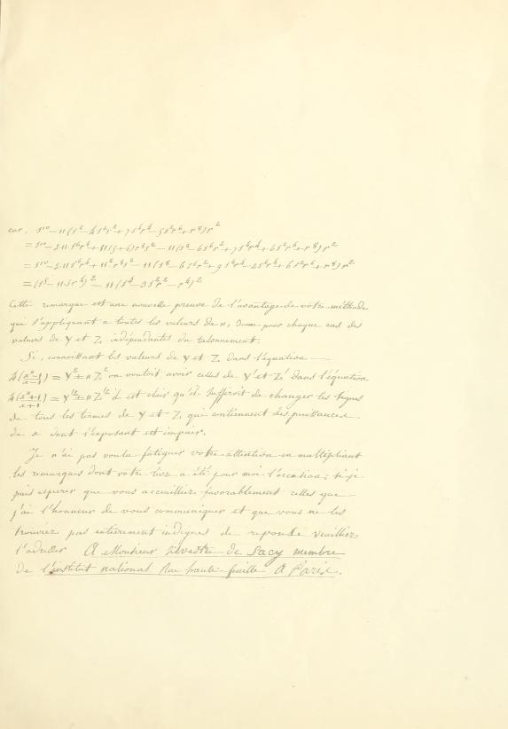
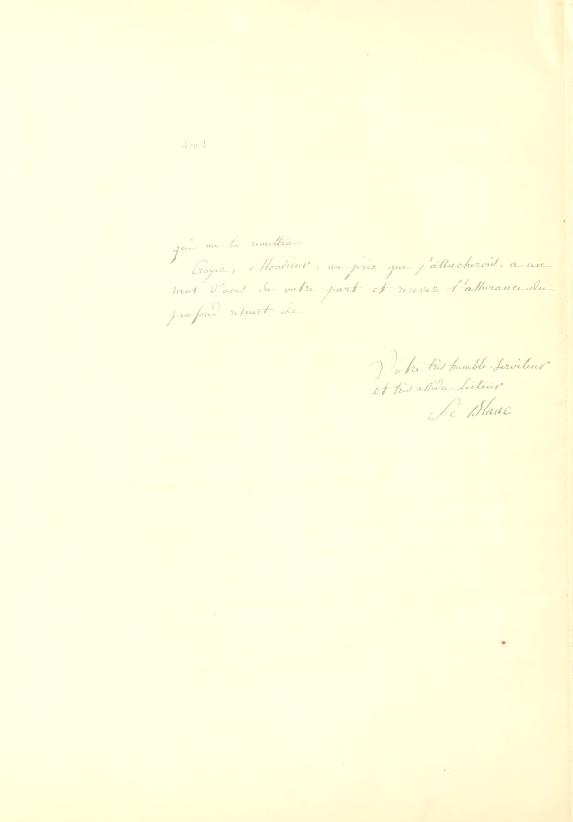
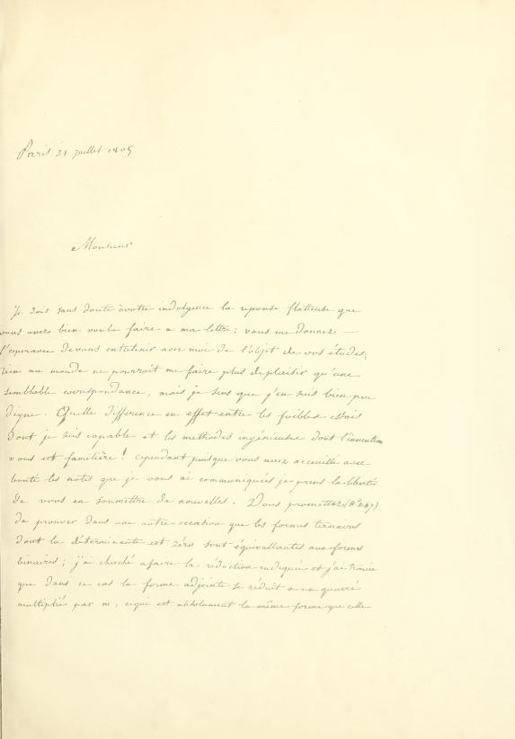
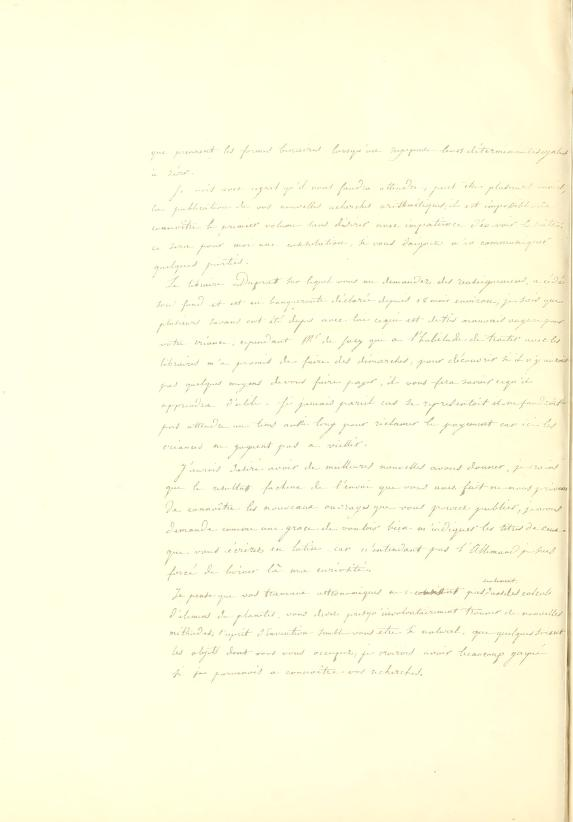
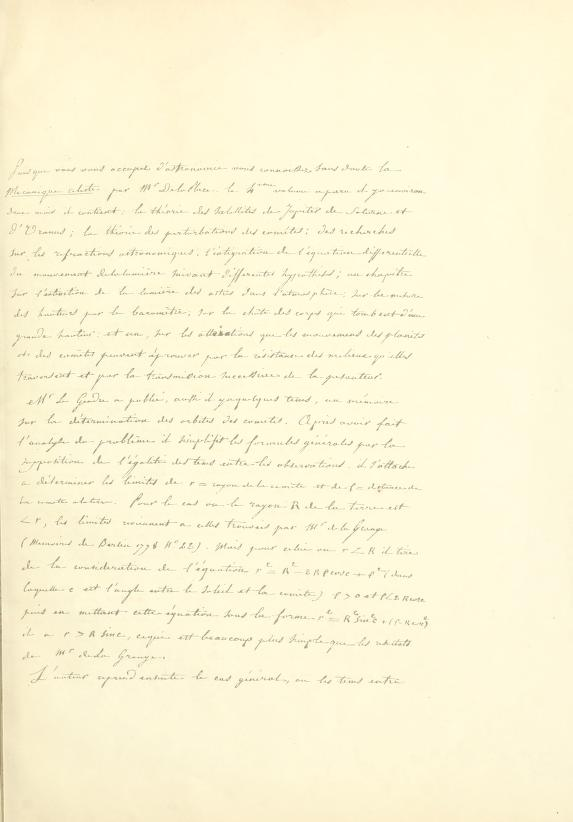
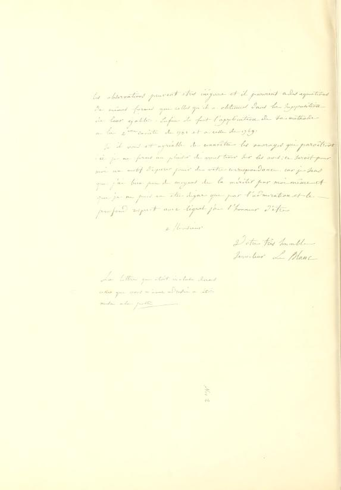
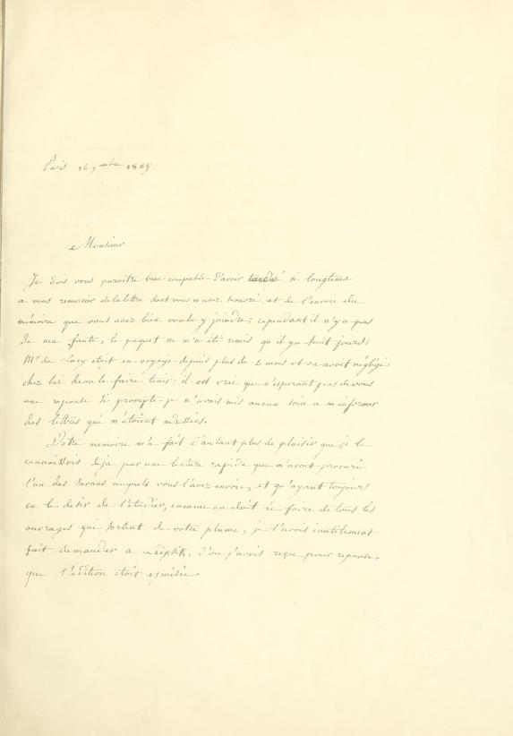
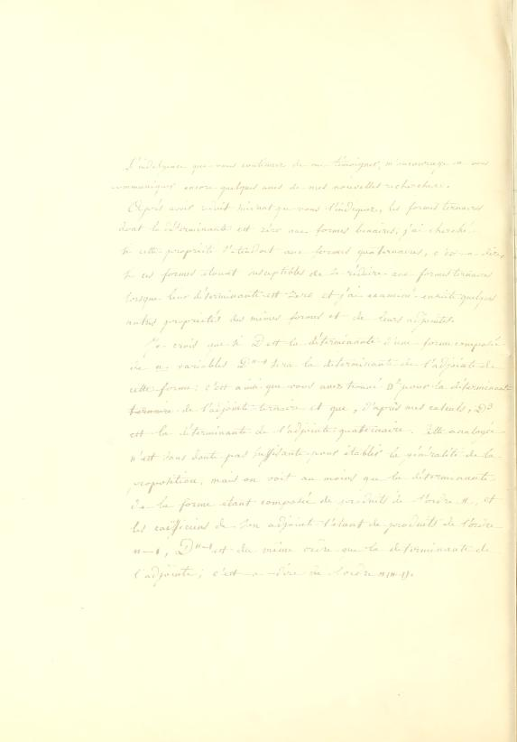
Desliza · la vela sigue tu cursor
VI · Cartas a Gauss
Para ser tomada en serio, siguió escribiendo — y sus trabajos empezaron a circular entre los grandes científicos europeos.
Monsieur Le Blanc Carl Friedrich Gauss
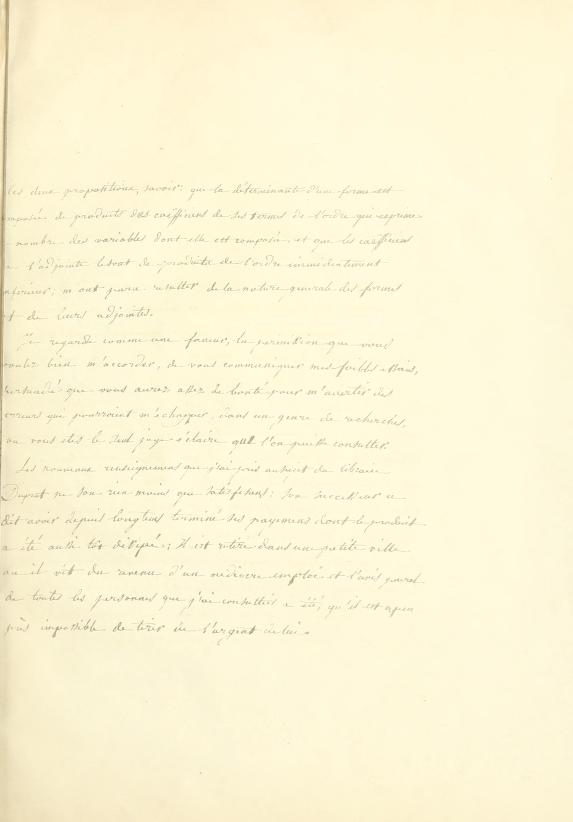
VII · 1806
En 1806, las tropas napoleónicas llegaron a Brunswick, donde vivía Gauss.
Sophie temió por su vida.
Pidió ayuda para protegerlo.
Un amigo de la familia, el general Joseph Marie de Pernety, intervino.
Esa intervención reveló quién estaba detrás de Monsieur Le Blanc.
Monsieur Le Blanc
Sophie Germain
«Mi admiración y asombro…»
«…cuando mi estimado corresponsal, el Sr. Le Blanc…»
«…se metamorfosea en este personaje ilustre…»
VIII · La matemática
Entonces, por fin, la vemos. No como una mujer oculta. Como una matemática.
p primo y 2p + 1 primo
Primos de Sophie Germain y el primer caso del último teorema de Fermat para una familia de exponentes.
vibración de superficies
Figuras de Chladni, placas elásticas. Premio extraordinario de la Academia de Ciencias de París, 1816.
Epílogo · La obra
Doscientos años después, su historia vuelve a escribirse a mano.
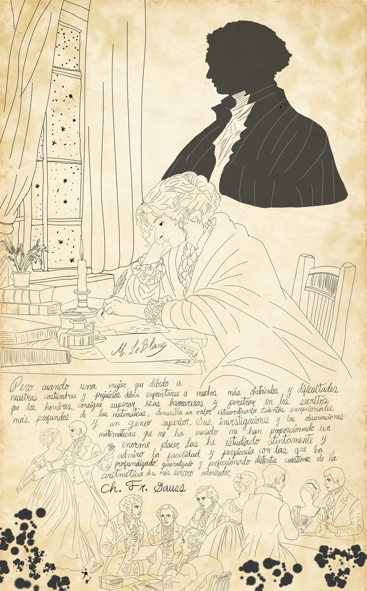
En una época en la que las mujeres eran excluidas del mundo científico, Sophie Germain desafió las convenciones sociales para seguir su pasión por las matemáticas.
La obra la representa estudiando en secreto, iluminada únicamente por una vela y resguardada del frío bajo un manto.
La misma vela que llevas en el cursor.
Sobre ella se alza una silueta masculina: el seudónimo que utilizó para que sus investigaciones fueran tomadas en serio.
Una sombra que la protege y la oculta a la vez.
Abajo, los bailes burgueses y las reuniones de científicos: las expectativas impuestas a las mujeres y los espacios intelectuales de los que eran excluidas.
Toda la composición descansa sobre un fragmento de la carta que Gauss le escribió al descubrir su verdadera identidad:
«Pero cuando una mujer, que debido a nuestras costumbres y prejuicios debe enfrentarse a muchos más obstáculos y dificultades que los hombres, consigue superar esas barreras y penetrar en los secretos más profundos de las matemáticas, demuestra un valor extraordinario, talentos excepcionales y un genio superior.» Ch. Fr. Gauss
Esta obra busca retratar no solo el genio de Sophie Germain, sino su perseverancia frente a las barreras que intentaron mantenerla en las sombras,
y reivindicar el lugar de la mujer en las matemáticas.
Ver la obra completa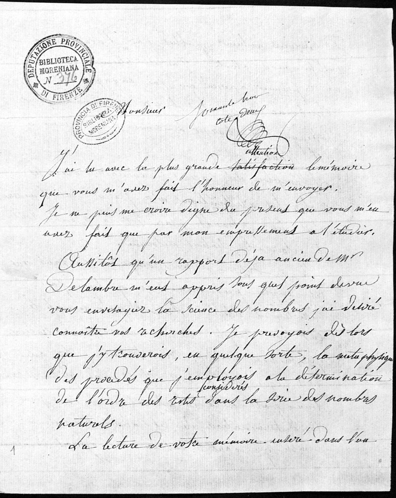
Intentaron alejarla de las matemáticas.
Terminó dejando su nombre en ellas.
Primero buscaba desesperadamente algo que leer.
Al final recomendaba y hacía circular matemáticas entre los grandes
científicos europeos.
Exposición · MAC 2026